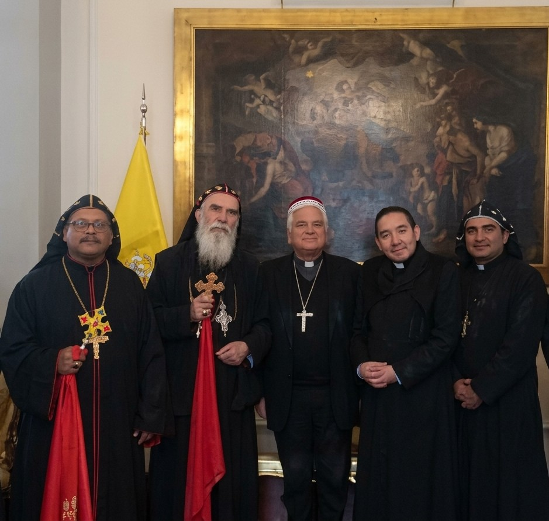
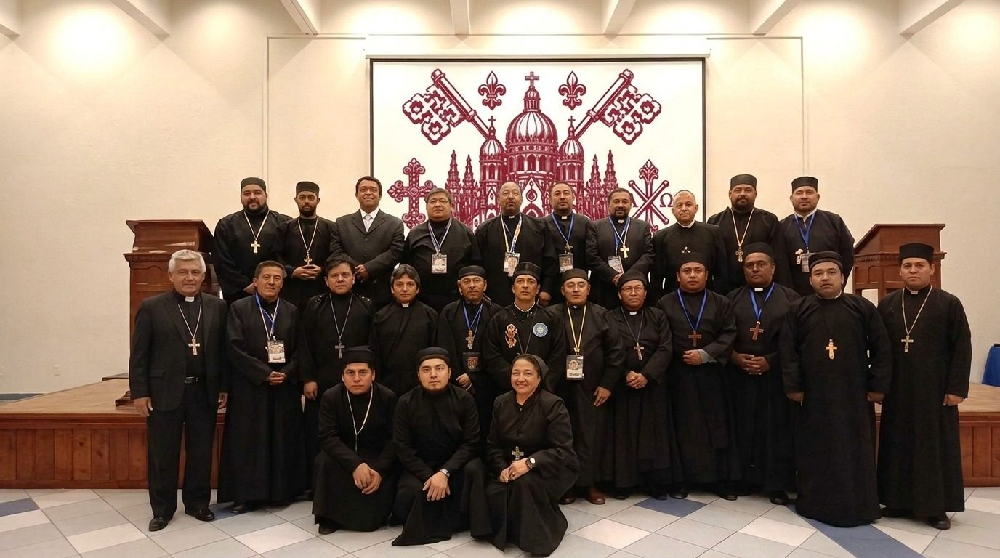
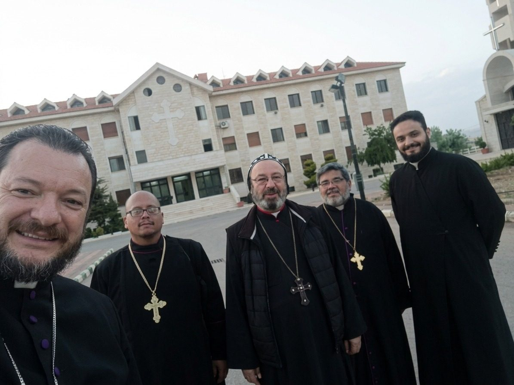
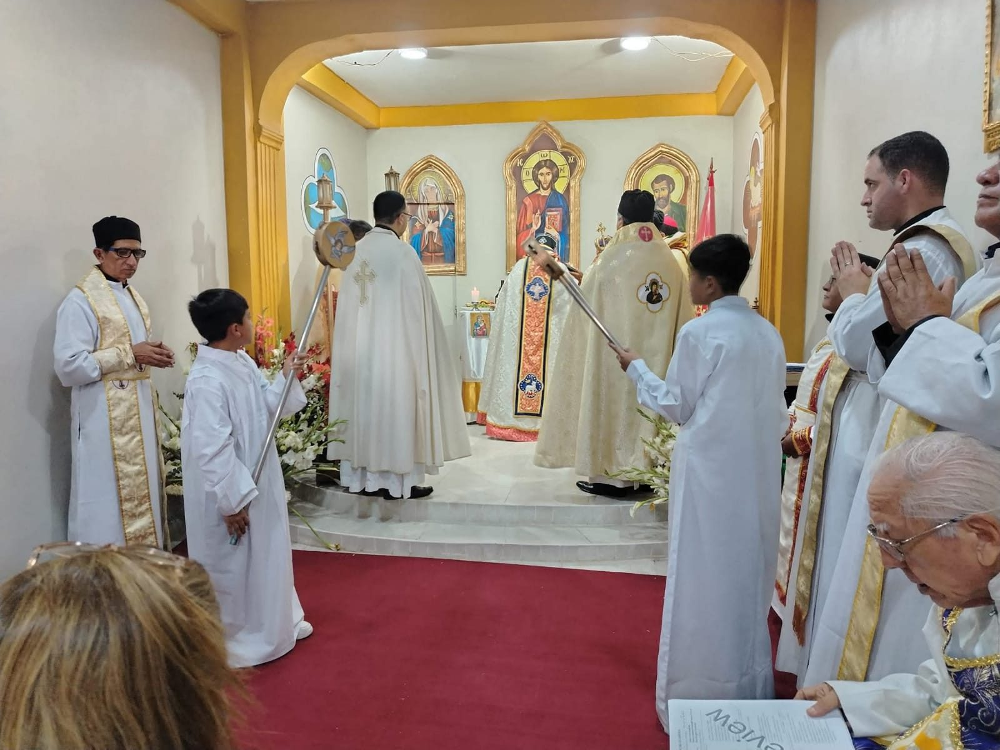
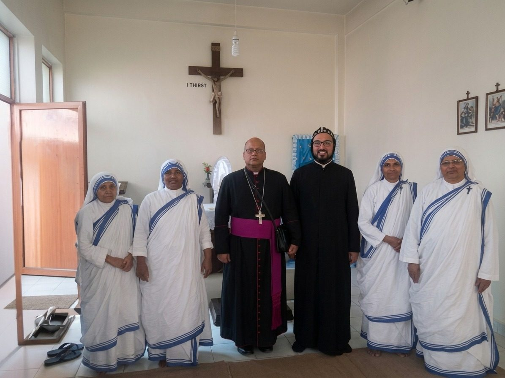
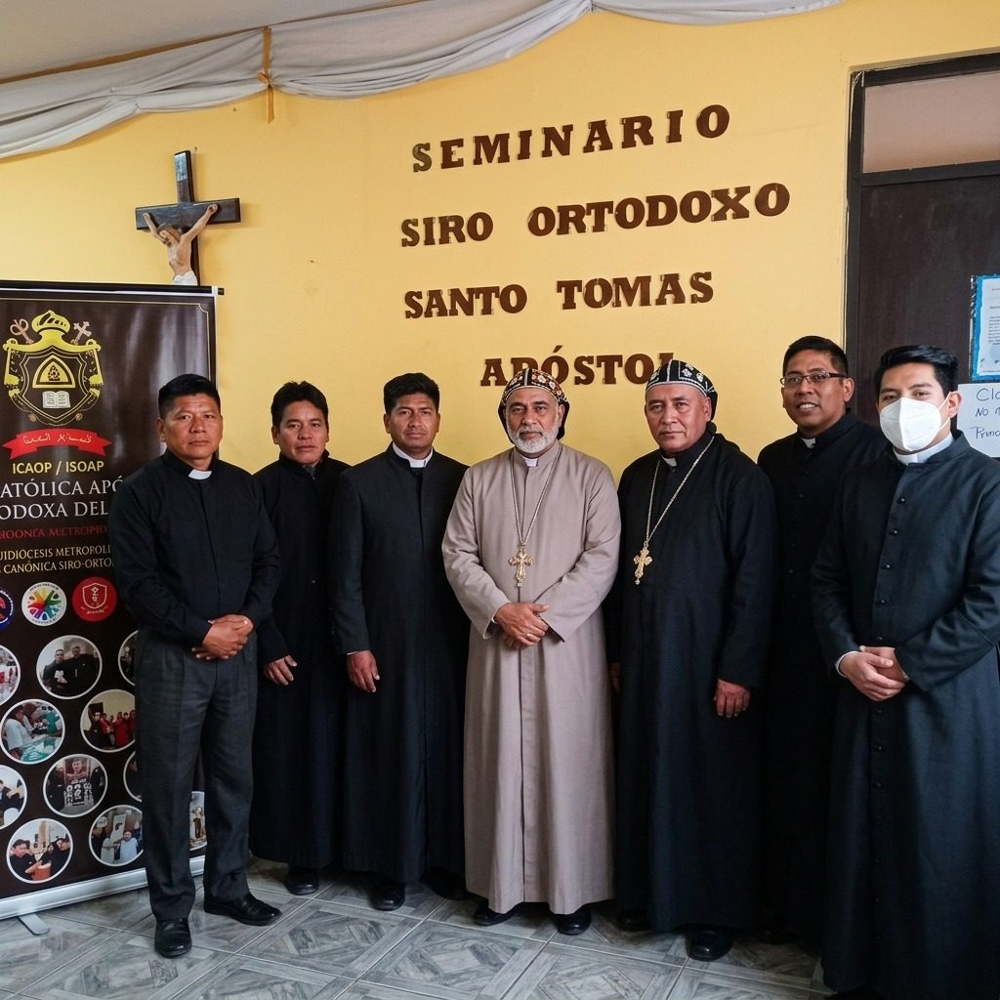
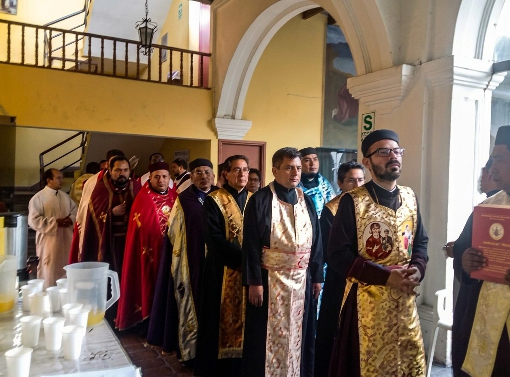
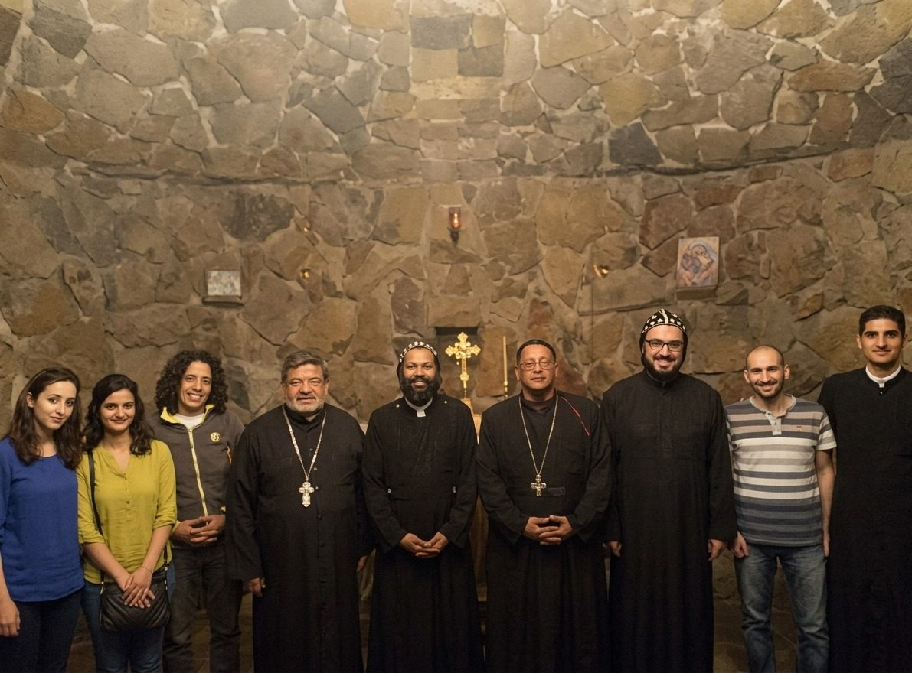
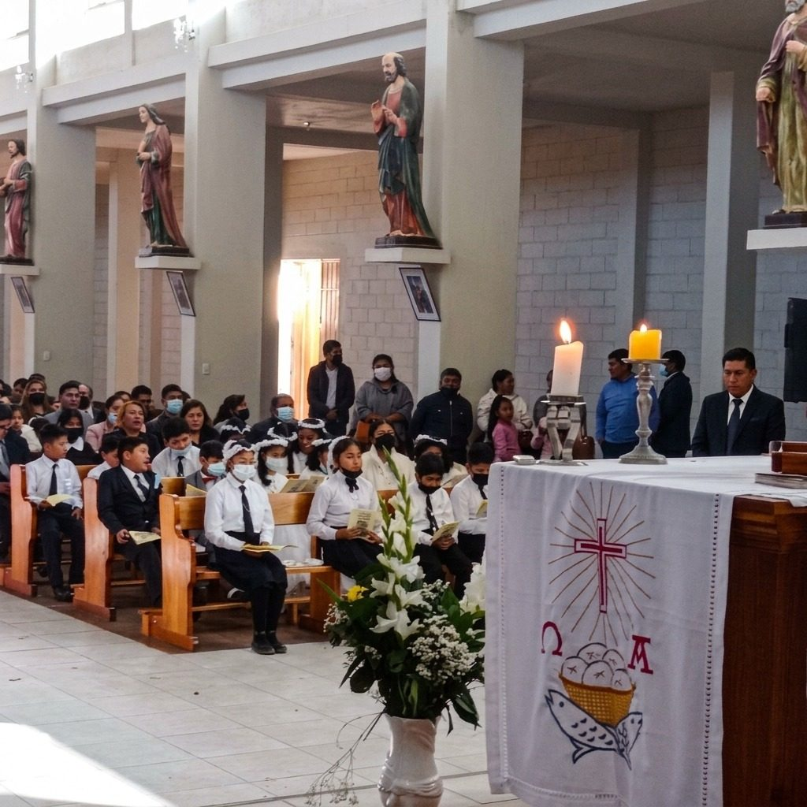
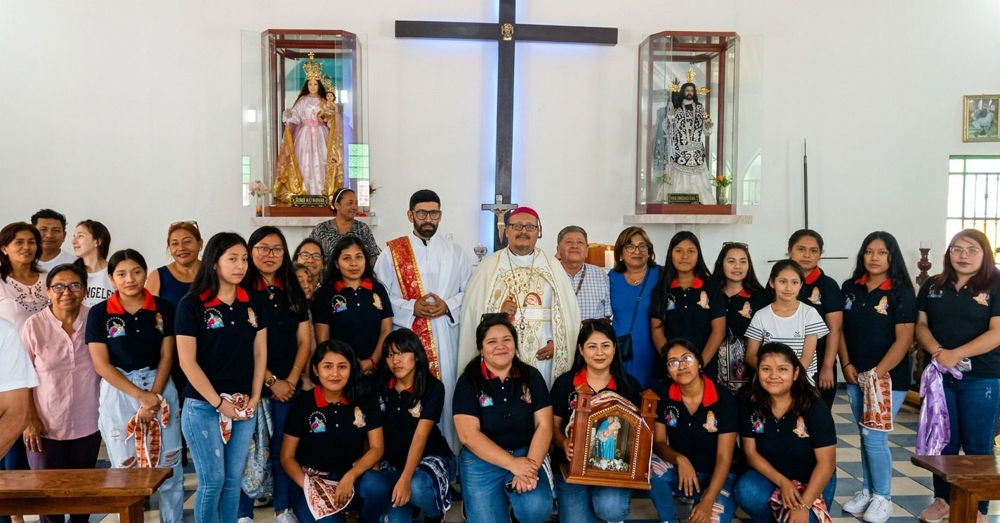

Iglesia Católica Apostólica Ortodoxa del Perú
«En la Fe y en la Sucesión Apostólica, parte de la Una Santa Iglesia Católica y Apostólica»
Treinta años de presencia misionera en el Perú, y hoy en más de 13 países.










Anuncios
- Santa Liturgia de Acción de Gracias por los 30 años de presencia misionera de la ICAOP en el Perú, en la Misión Parroquial San Antonio de Padua. 27/09/2026
- La ICAOP constituye su Dirección de Relaciones Eclesiales, Diálogo Ecuménico e Interreligioso. 17/08/2026
- SUNAT renueva la calificación de la ICAOP como Entidad Perceptora de Donaciones, vigente hasta noviembre de 2027. 14/11/2024
Publicaciones en Facebook
Himno de la ICAOP
Himno de la Iglesia Católica Apostólica Ortodoxa del Perú Internacional · Himno de marcha con acompañamiento coral
Estrella del Occidente · Anno Domini MMXXIV
Nacido del suelo que el sol acaricia,
Un Dios dio el soplo de fe y heredad.
Guardando el misterio que el alma codicia,
La senda antigua de la cristiandad.
Por San Pedro, la roca de gracia divina,
La Iglesia camina con paso triunfal,
San Andrés nos abraza en la ruta latina,
Con este rito noble y occidental.
Iglesia Católica Apostólica Ortodoxa
del Perú Internacional, rito occidental, voz de salvación.
Una sola fe que en el cielo azul
enciende la llama de la redención.
Theotokos Santa, con tu manto fiel,
cubre a tus hijos en cada nación,
un solo latido, un solo Israel,
marchando firme con el corazón.
San Ignacio nos guía con fuego en el pecho,
llevando al Dios vivo que es consolación.
San Bartolomé, con pureza y derecho,
nos pide firmeza en la consagración.
De Perú a Ecuador, Chile, Colombia, Guatemala, México, Bolivia y Brasil,
Estados Unidos,
Haití, El Salvador, Guinea y Pakistán,
las almas sedientas de gracia y amor
en nuestro refugio consuelo hallarán.
Se repite el coro.
Donde hay un hambriento, la Iglesia responde,
donde hay soledad, hay un faro de amor.
Ninguna frontera su gracia nos esconde,
unidos al Verbo, al Dios Creador.
Caminando juntos, pueblo de Dios,
hacia la meta que Él nos preparó.
Bajo el manto sagrado de la Madre… ¡Amén!